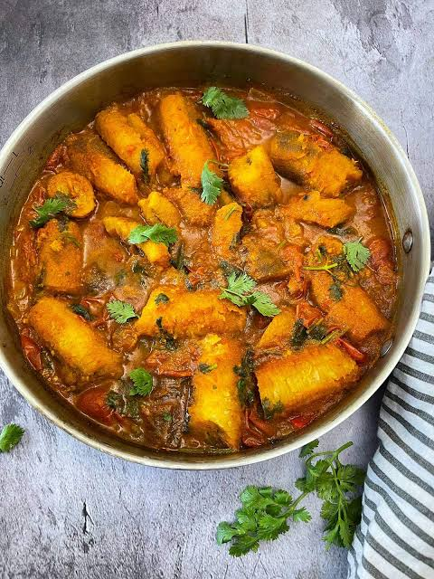
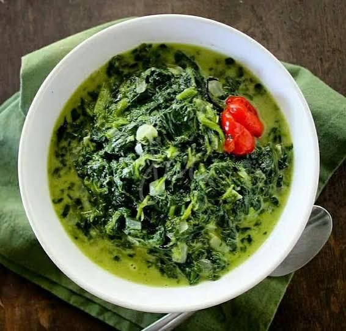
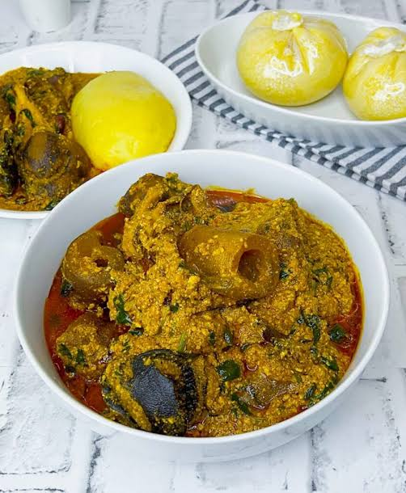
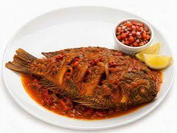
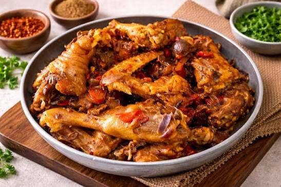
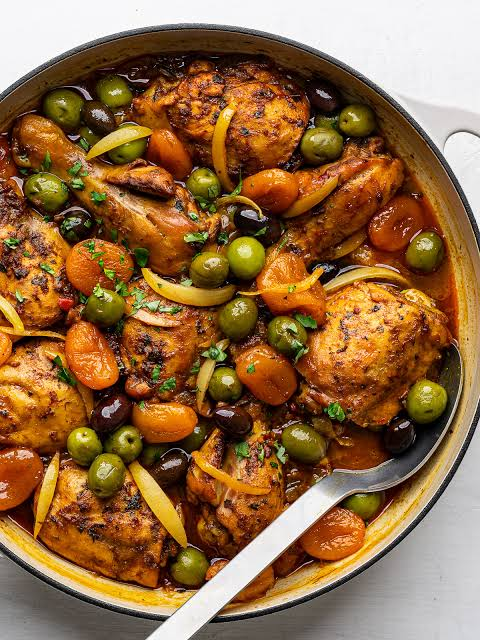

East Africa · Uganda
Matoke
Uganda's national dish: green cooking bananas simmered in a tomato and onion broth until soft and comforting.

Uganda's national dish: green cooking bananas simmered in a tomato and onion broth until soft and comforting.

Fragrant one-pot rice from the Swahili coast, browned with onions and warm whole spices, the star of every Kenyan celebration.

Tender amaranth leaves simmered in creamy coconut milk, a quick, comforting Swahili side dish.

A rich, nutty Nigerian soup thickened with ground melon seeds, palm oil and leafy greens.

Whole tilapia fried until crisp, then simmered in a tomato and onion sauce, the best meal to have by the shores of Lake Victoria.

Slow-cooked village chicken in a simple tomato gravy, Kenya's most treasured Sunday and holiday meal. The food every mother refers to when they say that there's food at home.

Chicken slow-braised with preserved lemon, olives and saffron in Morocco's iconic cone-shaped clay pot.